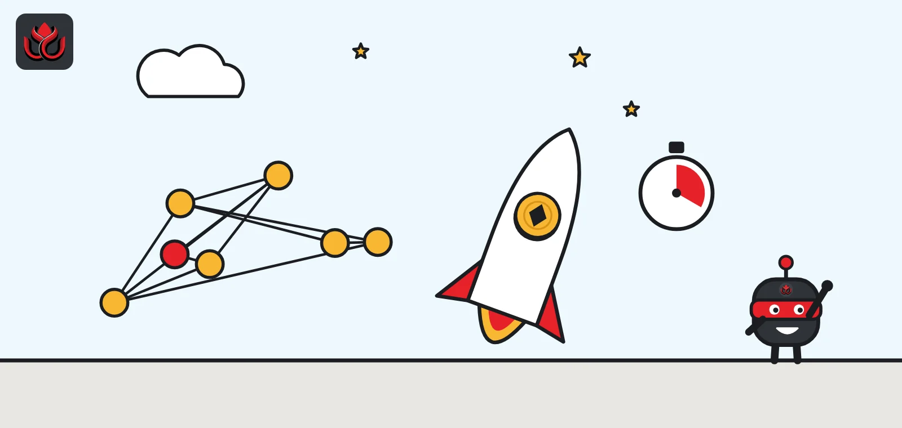
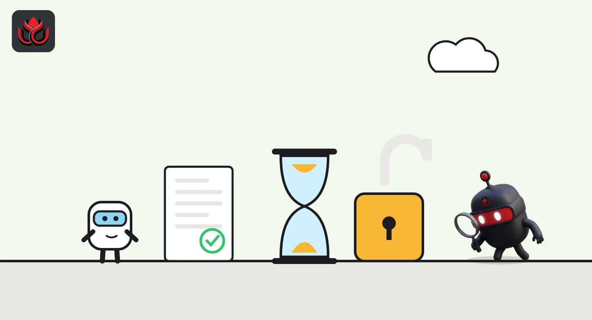
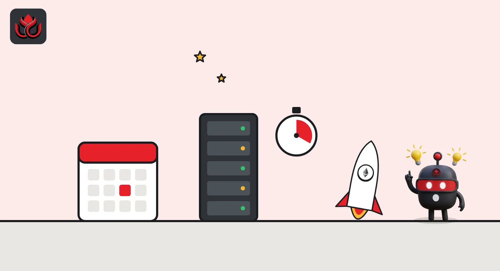

Base's next upgrade makes blocks 10 times faster. The code says November 5
Coinbase's layer 2 switched on its Cobalt upgrade on September 30. Next is Denim, which cuts block times from 2 seconds to 200 milliseconds and could break contracts that count time in blocks. Base's code sets November 5, 1:00 p.m. ET, though Base still calls November only a target.

Key points
- Base activated its Cobalt upgrade on September 30, 2026, adding transactions that wait until user-set conditions are met and new controls for B20 token issuers.
- Denim moves Base from one block every 2 seconds to five blocks a second. Base's node code sets it for November 5, 2026, at 1:00 p.m. ET; the docs call November a target.
- Contracts that measure time in blocks, such as timelocks and vesting, will see that time shrink to a tenth after Denim.
Cobalt is live, Denim is next
Base, the Ethereum layer 2 network built by Coinbase, switched on its Cobalt upgrade (a hard fork) at 2:00 p.m. ET on September 30, 2026. Its next upgrade, Denim, will make blocks 10 times faster. A layer 2 is a separate chain that processes transactions cheaply and settles back to Ethereum. Base's chain configuration on GitHub marks Cobalt active on mainnet from that moment, and on the Sepolia testnet from September 23 at the same hour. Base's upgrades page lists the same dates.
Base Build announced on X that day that Cobalt was live, calling it Base's third network upgrade of 2026. It said the fork has two main parts: validity transactions and changes to B20, Base's native token standard.
The next fork is already in the code. The same configuration file schedules Denim for Sepolia on October 21 and for mainnet on November 5, 2026, at 1:00 p.m. ET. Denim went live on Sepolia on October 21, the docs confirm. For mainnet, though, the docs say only that Base is targeting November, that this is not an activation timestamp, and that the node versions needed for mainnet were not yet published.
What Cobalt changed
Validity transactions. A user signs one transaction and attaches conditions, such as a pool price above a set level or a block number limit. Base holds the transaction and only includes it once every condition is met. If a condition can no longer be met, the transaction never lands. Base said this keeps orders private until included and ends the need to keep resending.
B20 changes. B20 arrived with the Beryl upgrade in June and is aimed at stablecoins and tokenized assets. Cobalt adds three things, according to Base:
- Composite policies, which let an issuer combine existing allowlists and blocklists with AND or OR logic. A fund could require both a KYC check and an accreditation check, each run by a different provider.
- Scheduled multiplier updates for corporate actions such as stock splits, in line with the ERC-8056 standard. Raw balances stay the same; wallets show the adjusted amount.
- A seizeWithMemo function that lets an issuer's authorized admin move a holder's balance with an onchain note, if the issuer has enabled seizure for that token.
Node plumbing. Cobalt adds dynamic upgrades, where nodes read fork timestamps from a smart contract on Ethereum instead of needing a new release for each fork. On mainnet this runs in metrics-only mode for now. Base's docs say Cobalt also moves the registration of TEE signers (TEEs are secure hardware enclaves used in Base's proof system) to onchain attestation checks.
Base told indexers they need to update to a new ABI (the interface definition apps use to read contracts) for the fork. Base's repository holds separate audit reports for Cobalt's B20 changes and its dynamic upgrade system.

Denim: five blocks a second
Denim is the bigger change for apps and traders. Base's Denim specification says block production moves from one block every two seconds to five full blocks per second. Each 200-millisecond block gets its own number, hash and receipts. Denim replaces Flashblocks, Base's current system of streaming partial updates within a two-second block, so apps using Flashblocks must switch to the new block and RPC streams (RPC servers are the endpoints apps use to read the chain).
The standard block timestamp still counts in whole seconds. A new feature called BaseTime adds the millisecond part through a system transaction at the start of each block, which contracts can read. The Denim page also lists B20 transfer and policy improvements, and Base's audit folder includes reports titled "denim-200ms-blocks" and "denim-b20-v3".
There is one clear risk to check. Because block numbers will advance 10 times faster, any contract that measures time in blocks will see that time shrink to a tenth. Base names timelocks, vesting schedules, per-block rate limits and governance voting windows as examples, and says immutable contracts with block-count rules cannot be fixed after activation.
Base's upgrade pace
Base has shipped a fork every one to three months since leaving the shared OP Stack upgrade path. Azul, its first independent upgrade, went live on May 28 and introduced a multiproof system using both TEE and zero-knowledge proofs. Beryl followed on June 25. It made Reth V2 the reference execution client and, according to Base's docs, cut the single-proof withdrawal window to Ethereum from 7 days to 5. The dual-proof fast path stays at 1 day.
Base withdrawal window to Ethereum after Beryl
days

What comes after Denim
Base has listed more work for the coming months. Its Cobalt post named three items: 200 ms blocks (Denim), Base Transactions, and support for part of Ethereum's Glamsterdam improvements.
Base Transactions sit in a later fork called Everest, which has no date yet. The upgrades page says Everest brings a new transaction type that supports batching, gas sponsorship and paying gas in tokens other than ETH. That last feature is not part of Cobalt or Denim.
Until this year, Base took its upgrades from the OP Stack, the shared software behind Optimism and related chains.
Timeline
Azul activates on Base Sepolia
Azul activates on Base mainnet
Beryl activates, introducing B20 and a 5-day single-proof withdrawal window
Cobalt activates on Base Sepolia
Cobalt activates on Base mainnet
Denim activates on Base Sepolia
Denim mainnet time in Base's node code (docs: November target)
LC Insight analysis
This section is our reading of the facts above, not a statement of fact.
- We think Base now runs its own release train, with a hard fork every one to three months since May. That pace suits a chain backed by Coinbase, but it means steady work for node operators, exchanges and wallets.
- The block-count warning is Denim's quiet risk. Most big protocols use timestamps, but older or unchangeable contracts that count blocks could see lockups and votes end 10 times sooner than planned.
- Faster blocks matter most for trading and games, where a fraction of a second decides whether an order fills. Whether users feel it depends on how wallets, indexers and RPC providers cope with five blocks a second.
What's next
- Publication of the mainnet node release for Denim and a confirmed activation time
- Exchange deposit and withdrawal pauses around the fork
- Apps migrating off Flashblocks before activation
- A date for Everest and gas payments in tokens
Disclaimer. This article is based on public information and the sources listed below as of the update time shown. It is for information only and is not investment, legal or tax advice. Figures may change as companies and authorities publish new data.
Sources
- Base, chain upgrade configuration (base/base on GitHub)
- Base, audit reports for Cobalt and Denim (base/base on GitHub)
- Base documentation, Upgrades overview
- Base documentation, Denim 200ms native blocks
- Base documentation, Cobalt dynamic upgrades
- Base documentation, Beryl faster withdrawals
- Base Build on X, Introducing Base Cobalt (September 30, 2026)